Official Church study guide
Atonement of Jesus Christ
Begin with the Church’s guide, then follow its questions and scriptures into a deeper personal study.
The Church of Jesus Christ of Latter-day Saints
Open the complete resource ↗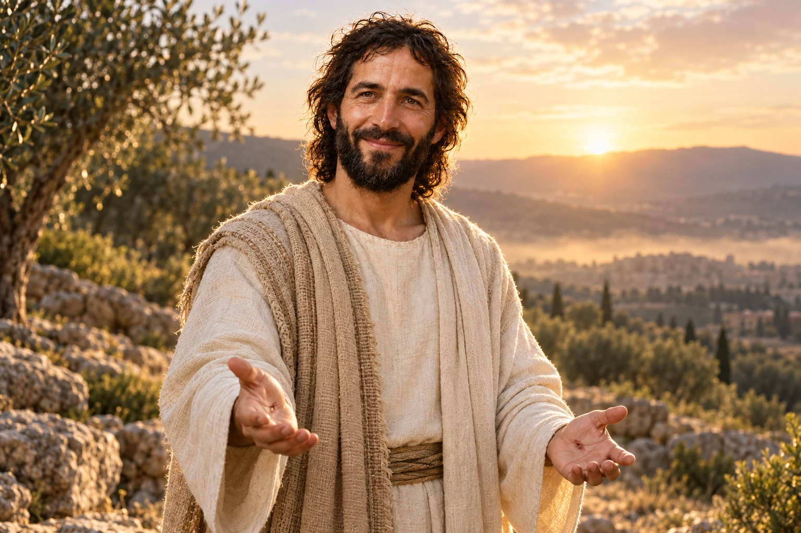
Jesus Christ at the center
His love reaches into every part of our lives. Come, read, and draw near to Him.
ContinueAn invitation to linger
Jesus Christ is at the heart of this study. His suffering in Gethsemane and on the cross, His death, and His Resurrection open the way home to our Heavenly Father. We come to Him with sins to forsake, sorrows to share, questions to ask, and hope that may still be small. He invites us to come.
Begin with John 3:16–17 and the official Atonement of Jesus Christ study guide.
Follow the story from the beginning, or choose the part you need today. Open any picture for its scripture and study options. The artwork offers reverent, imaginative scenes; the linked scriptures provide the accounts we study.
01 · Before the world
The Pearl of Great Price takes the story of redemption back before mortal life. Moses records the Beloved Son's willingness to do the Father's will and give Him the glory. Abraham describes the council before the world and the choice of one who would be sent. Jesus Christ's mission belongs within the Father's loving purpose for His children.
Explore the picture and scripture
Stars fill the sky above still water. Let the quiet of this imagined landscape lead you to the scriptures about Jesus Christ, the Creator.
Read the Son's response in Moses 4:2 beside His prayer in Luke 22:42. What continuity do you see in His willingness to serve the Father?
Moses records God creating through His Only Begotten. John's Gospel identifies the Word who was with God and through whom all things were made. The Savior who came into mortality is also the Creator. His love for the world is personal.
Official Church study guide
Begin with the Church’s guide, then follow its questions and scriptures into a deeper personal study.
The Church of Jesus Christ of Latter-day Saints
Open the complete resource ↗02 · Why a Savior?
Our lives include real choices and real consequences. Lehi places agency within God's plan and teaches that redemption comes through the Holy Messiah. The Fall brought mortality and separation from God's presence; Jesus Christ makes redemption possible. We are also responsible for our own sins. Our need for Him includes both the death we cannot prevent and the sins from which we cannot cleanse ourselves.
Explore the picture and scripture
A path leads from green shelter into open, rugged country. Read Lehi’s teaching about agency and redemption.
Read 2 Nephi 2:6–9, 22–27 and Mosiah 3:17.
Alma does not treat wrongdoing as unimportant. He teaches that mercy reaches the repentant through the Redeemer while justice remains real. Repentance is possible because of Christ. His invitation gives us a reason to face the truth about our choices and a way to move forward.
Read Alma 42:13–25. Reflect: What changes when I see repentance as an invitation from someone who loves me?
Deeper reading: 2 Nephi 9, Alma 34:8–17, Moses 5:9–12.
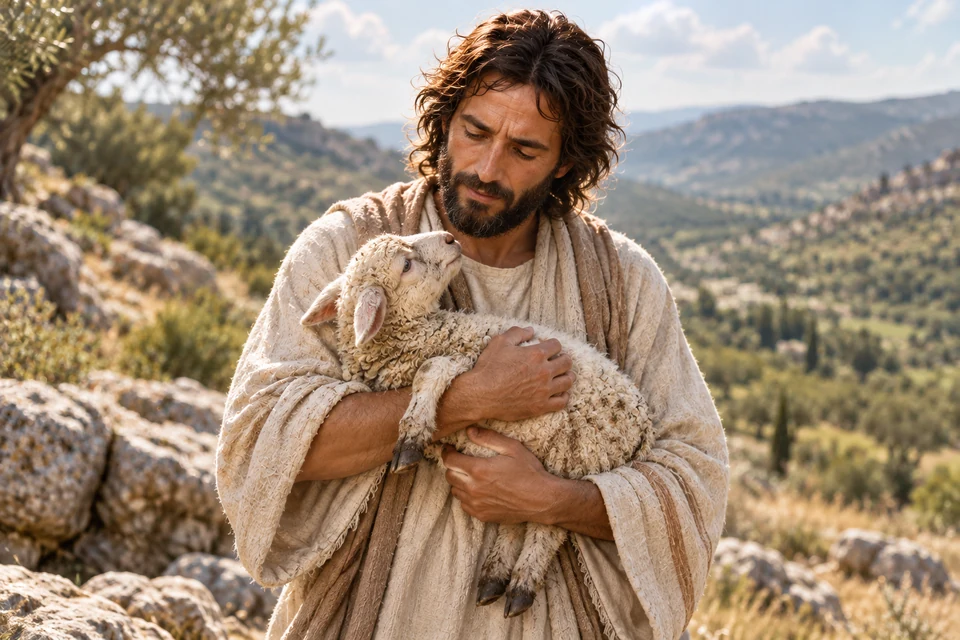
Explore the picture and scripture
The sheep rests in His arms. Jesus tells of a shepherd who goes after the one that is lost.
03 · The promise
An angel taught Adam that sacrifice pointed to the Only Begotten. Adam and Eve heard the promise of redemption and rejoiced. Enoch's teaching connects the Fall, repentance, baptism, the Spirit, and the blood of the Only Begotten. The invitation to come to Christ runs through these earliest accounts.
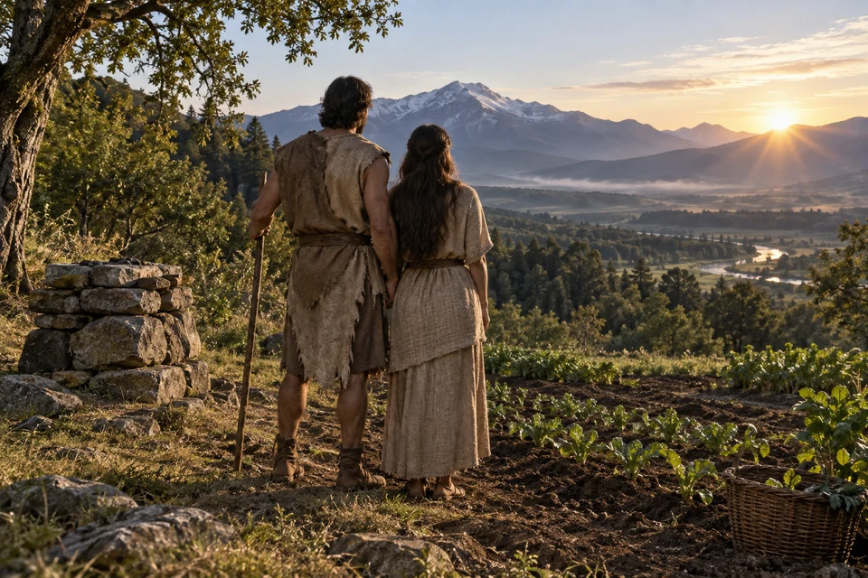
Explore the picture and scripture
Two figures face the morning beside cultivated ground and a simple altar. This imagined scene of Adam and Eve invites us to read the promise of redemption they received.
Enoch mourned as he saw human wickedness and suffering. He also saw the coming of the Son of Man, the cross, and the promise of resurrection. The vision joins sorrow with hope. Read the account carefully and notice where Enoch's attention turns toward the Savior.
The Passover account tells of deliverance. Isaiah speaks of the servant who bears grief and sorrow. John the Baptist identifies Jesus as the Lamb of God. Read these passages together and consider how scripture prepares us to understand His sacrifice.
Which image helps you understand Him today: Creator, Redeemer, Lamb, Shepherd, or the One who carries our sorrows? Follow one title through its linked passages.
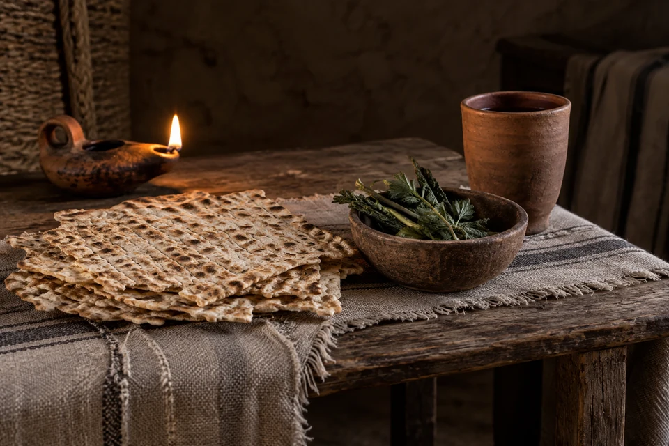
Explore the picture and scripture
Bread, herbs, a cup, and a lamp invite a pause to remember Passover. This symbolic still life leads to the account of deliverance and to Jesus Christ, the Lamb of God.
04 · His sacrifice
Before Gethsemane, Jesus shared bread and the cup with His Apostles. Remembering Him would become part of their worship. Read slowly and notice how personally He speaks about His body and blood.
Explore the picture and scripture
Bread and a cup rest on a quiet table. Return to the Savior’s words at the Last Supper.
Jesus prayed to the Father in anguish and submitted to His will. The account calls for reverence. We can attend to His words without pretending to measure everything He endured. In latter-day revelation, the Savior speaks of His suffering and invites us to repent.
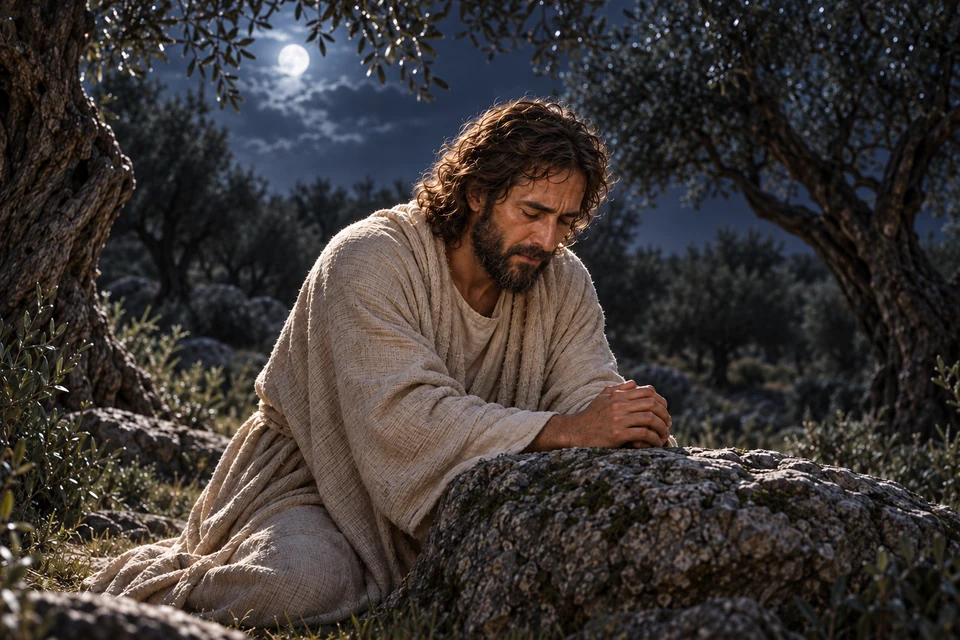
Explore the picture and scripture
Under the olive trees, Jesus bows in prayer. Read His words to the Father.
John records the title placed on the cross, the two others crucified beside Jesus, and His mother standing nearby. Even there, He spoke to His mother and the beloved disciple about their care for one another. He later declared His work finished and died. His burial followed; His Resurrection would transform the disciples' grief.
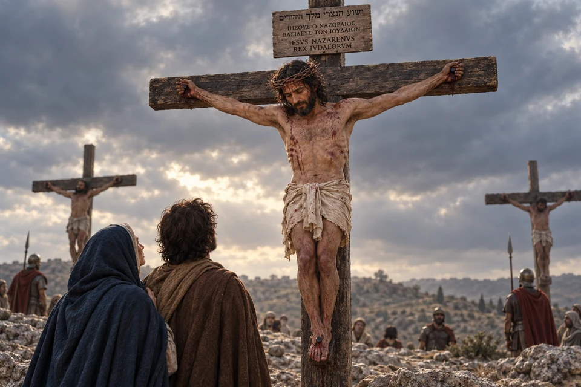
Explore the picture and scripture
Mary and the beloved disciple stand near Jesus beneath a darkened sky. Pause with John’s account of His love and His finished work.
What do His words reveal about His love? Read John 10:17–18 and 3 Nephi 27:13–16.
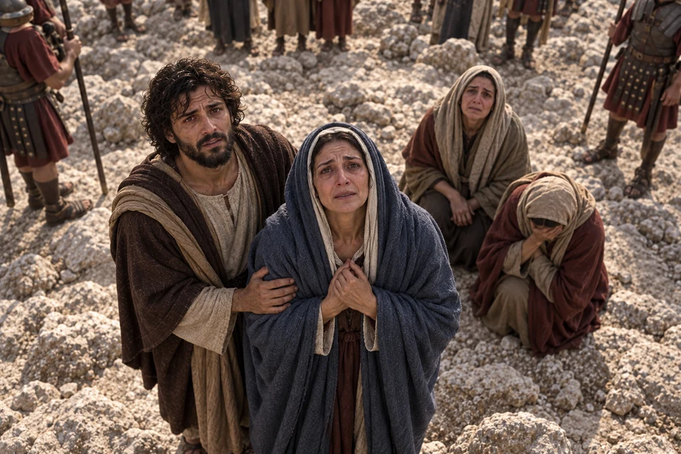
Explore the picture and scripture
A mother and the disciple look upward. John records the Savior’s care for them from the cross.
Conference message · Watch or read
Bruce R. McConkie bears witness of the Savior’s sacrifice. Read or listen, then return to the Gospel accounts.
The Church of Jesus Christ of Latter-day Saints
Open the complete resource ↗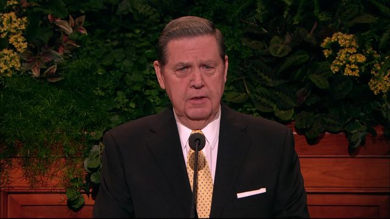
Conference message · Watch or read
Jeffrey R. Holland follows the Savior’s lonely journey and bears witness of His love for us.
The Church of Jesus Christ of Latter-day Saints
Open the complete resource ↗Conference message · Watch or read
Jeffrey R. Holland reflects on the cross and the meaning of following Jesus Christ.
The Church of Jesus Christ of Latter-day Saints
Open the complete resource ↗05 · He is risen
The tomb was empty. Mary Magdalene encountered the risen Lord. The disciples' witness concerns a living Savior, not only the memory of a teacher they loved.
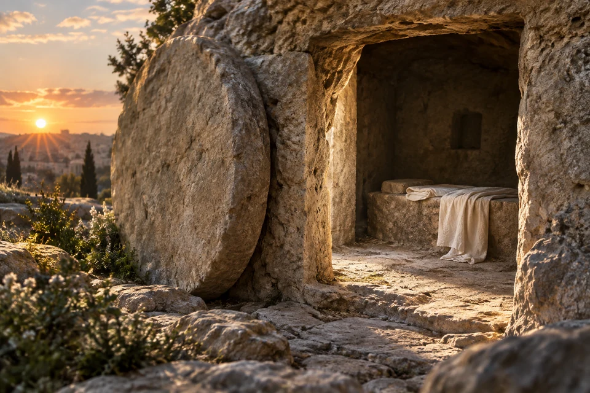
Explore the picture and scripture
Morning light enters a rock-cut tomb. Read the witnesses’ accounts of the risen Savior.
Through Jesus Christ, everyone will be resurrected: spirit and body will be reunited. Eternal life with God is a distinct gift. Christ invites us to receive it through faith in Him, repentance, His ordinances and covenants, and faithful discipleship.
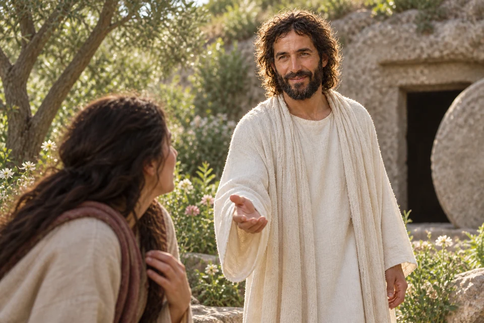
Explore the picture and scripture
A woman turns toward the risen Jesus in a garden. John records that He called Mary by name.
How does the promise of Resurrection change the way I remember someone I love?
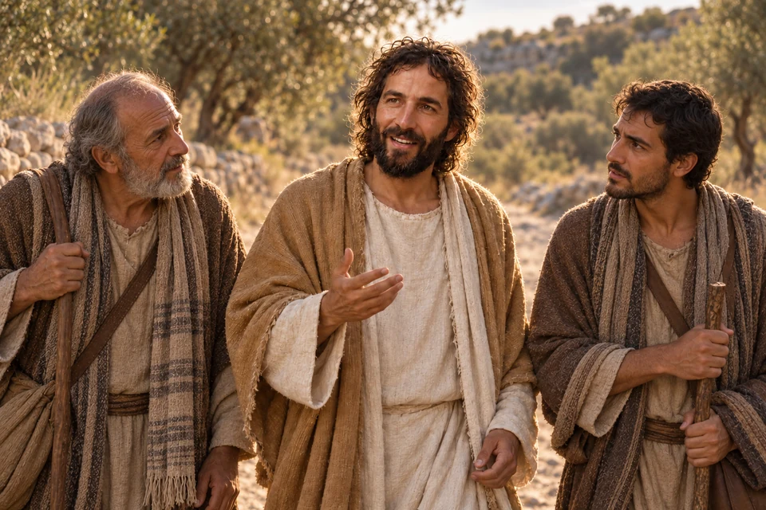
Explore the picture and scripture
Jesus walks beside two listeners on a country road. Read how He opened the scriptures to the disciples traveling to Emmaus.
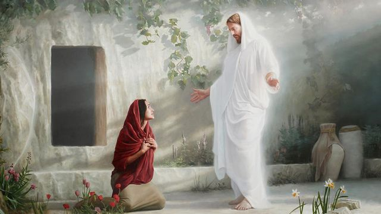
Official Church study guide
Follow the scripture witnesses and explore the promise of life beyond death.
The Church of Jesus Christ of Latter-day Saints
Open the complete resource ↗06 · One by one
Nephi's vision joins the birth and ministry of the Son of God with an explanation of God's love. King Benjamin teaches of the Savior's suffering and the salvation that comes through Him. Abinadi draws on Isaiah, and Alma speaks of the Redeemer's intimate knowledge of pain. These witnesses prepare readers to recognize Jesus Christ.
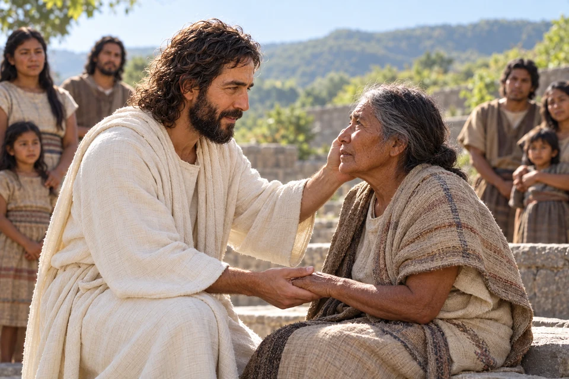
Explore the picture and scripture
Jesus leans toward an older woman as others wait nearby. Read of His compassion and healing among the people in the Book of Mormon.
The risen Jesus invited the people to come forward and know that He was the God of Israel who had been slain for the sins of the world. They came one by one. Later He healed their sick, prayed for them, and blessed their children. His ministry gives the doctrine a personal setting: people heard Him, approached Him, and received His compassion.
What do you notice when you read the account slowly, one person at a time? Which invitation would you like to respond to today?
Moroni ends with an invitation to come to Christ and be perfected in Him. The book's testimony leads to a relationship with the Savior and a life changed through His grace.
07 · His living voice
In modern revelation Jesus Christ speaks of His suffering, calls us to repent, and describes Himself as our Advocate with the Father. These passages invite careful, personal reading. Notice who is speaking and what He asks us to trust.
Explore the picture and scripture
An open book and notebook sit before a thoughtful reader. Choose a passage and linger with it.
Joseph F. Smith's vision describes the Savior's work among the righteous dead and the organization of messengers to carry the gospel to those who had not received it. The vision expands our view of His redeeming work while honoring the need for repentance and the ordinances of His gospel.
Christ's invitation to look to Him belongs in ordinary days as well as moments of crisis. Read His words about His wounds, fear, and faith together. Return to the same passage when your circumstances change; there may be more to hear.
Which of His invitations would you like to carry with you this week? Write it in your own notebook and return to the complete passage.
08 · Repentance
Repentance begins with turning toward God. We recognize wrong, feel sorrow for it, confess, seek forgiveness, and forsake the sin. Where possible, we repair the harm. Serious sins require help from the appropriate priesthood leader. The process is personal and sincere; a checklist cannot measure a changed heart.
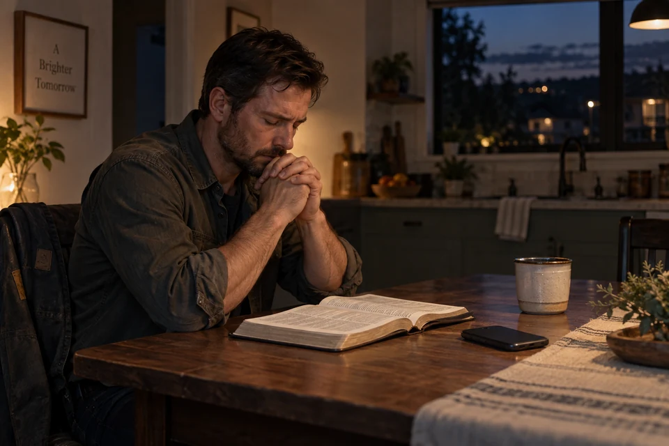
Explore the picture and scripture
A man bows his head in the quiet of his home. There is room to speak honestly with God.
Official guide: Repentance. Scripture: Doctrine and Covenants 58:42–43.
Alma remembered Jesus Christ and cried for mercy. His account moves from anguish to joy. We need not expect everyone's experience to follow the same emotional timetable to trust the same Redeemer.
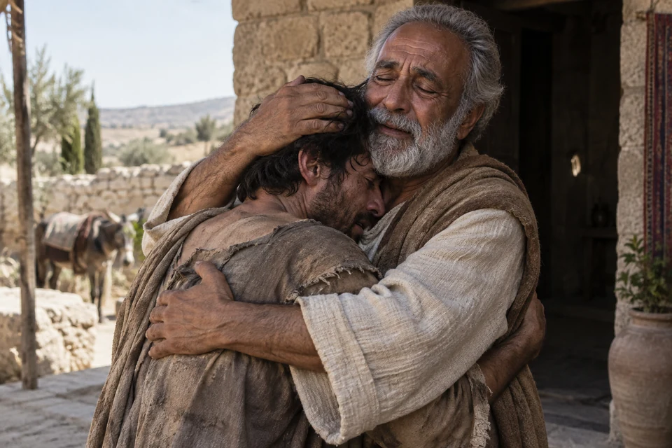
Explore the picture and scripture
An elderly father holds his returning son. Read the parable Jesus told about repentance and welcome.
What is one honest step I can take today? Choose a private prayer, a needed conversation, or a safe act of repair. Do not use an apology to demand reconciliation or place someone in danger.
Making amends calls for sensitivity and respect for the other person's wishes. Seek trusted guidance when direct contact could cause further harm. Read the Church's recovery guide on making amends.
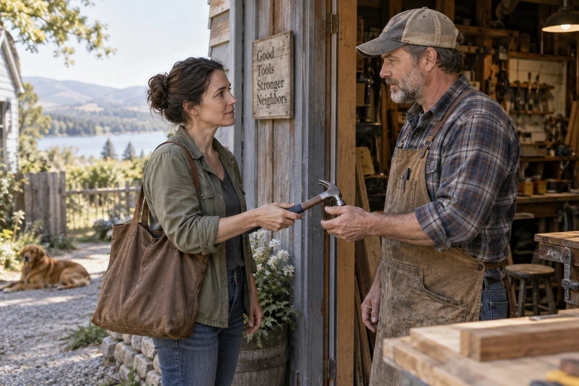
Explore the picture and scripture
Two neighbors exchange a tool at a workshop door. Consider the practical work of making amends.
Official Church study guide
Explore how faith in Jesus Christ leads to sincere change, confession, forgiveness, and a new direction.
The Church of Jesus Christ of Latter-day Saints
Open the complete resource ↗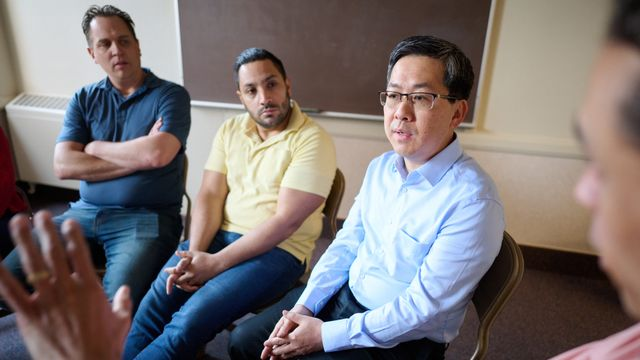
Official Church study guide
Read practical guidance for making amends with humility, care, and respect for those affected.
The Church of Jesus Christ of Latter-day Saints
Open the complete resource ↗09 · Grace
Grace is God's gift through Jesus Christ. We do not purchase it by accumulating good deeds. His grace also helps us grow as we exercise faith and follow Him. Obedience can become a grateful response to His love, and weakness can become a place where we learn to rely on Him.
Explore the picture and scripture
A woman sits with open scriptures and a quiet expression of gratitude. Consider the change Christ can bring to a heart.
Official reading: Dieter F. Uchtdorf, The Gift of Grace.
Where am I trying to carry everything alone? What might accepting help from Christ look like in that part of my life?
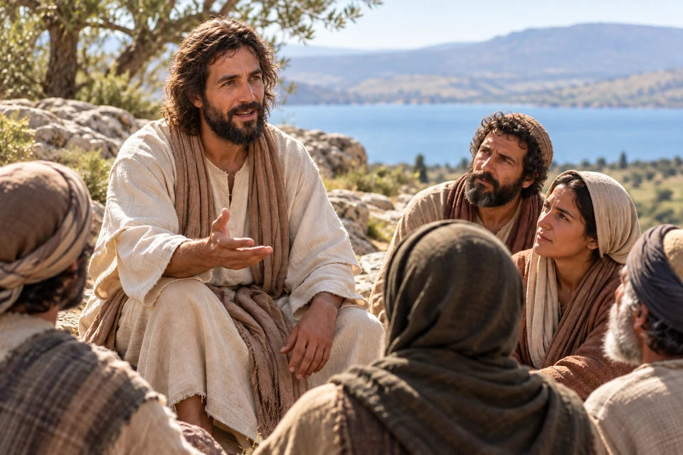
Explore the picture and scripture
Jesus speaks while those around Him listen. Bring a question to His teachings.
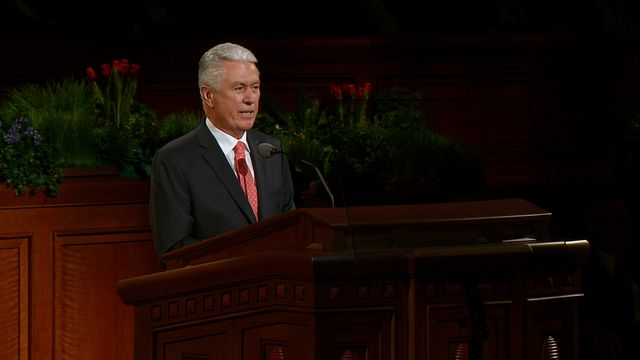
Conference message · Watch or read
Dieter F. Uchtdorf teaches about the gift of grace and the change it can bring to our lives.
The Church of Jesus Christ of Latter-day Saints
Open the complete resource ↗Conference message · Watch or read
Russell M. Nelson invites us to learn of Jesus Christ and draw His power into our lives.
The Church of Jesus Christ of Latter-day Saints
Open the complete resource ↗10 · Healing
Alma teaches that the Savior took upon Himself pain, sickness, and infirmities and knows how to help His people. We may seek His help with grief, loneliness, illness, disappointment, and the wounds caused by others. These burdens are not all evidence of personal sin.
Explore the picture and scripture
Neighbors carry bags together. Bearing another person’s burden often begins with ordinary help.
Relief does not always arrive as the immediate removal of a burden. The people of Alma were strengthened while they were still in bondage. Their story invites patient hope without promising a particular timetable for someone else's healing.
Official reading: Dallin H. Oaks, Strengthened by the Atonement of Jesus Christ.
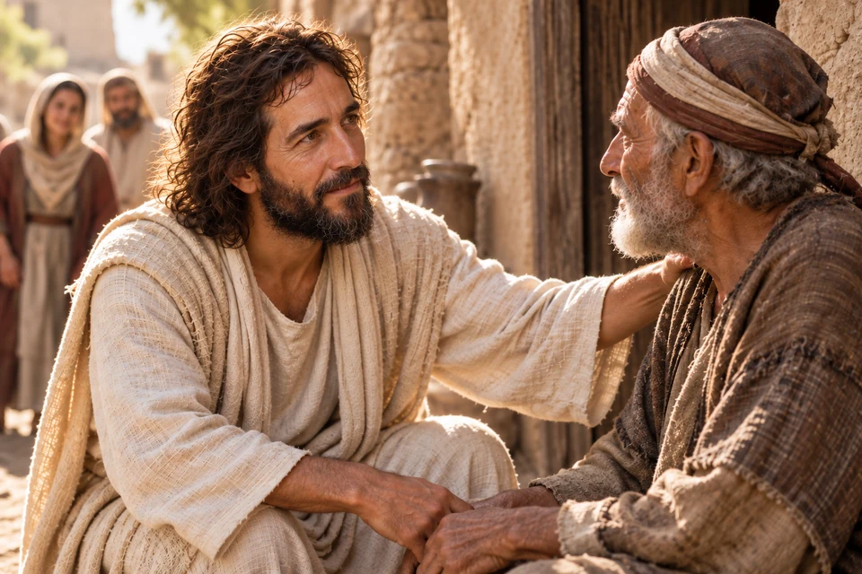
Explore the picture and scripture
Jesus attends to an older man. The Gospels describe His compassion for those who needed Him.
Who can help me carry today's burden? Who might need my quiet presence?
Forgiveness does not require allowing further harm or immediately restoring trust. Healing can include clear boundaries and help from trusted people. Read the Church's guidance, Is It Possible to Forgive?. The invitation to forgive must never be used to pressure someone into an unsafe relationship.
If you have been abused, it is not your fault. Faith and qualified professional help can accompany one another as you seek safety and healing. Read What if I think the abuse is my fault? and Should I get professional help?.
Explore the picture and scripture
A woman rests her hand on another woman’s arm as she weeps. Presence can be a quiet gift in grief.
Conference message · Watch or read
Dallin H. Oaks speaks about the Savior’s help with the pains and burdens of mortal life.
The Church of Jesus Christ of Latter-day Saints
Open the complete resource ↗11 · Remember Him
Following Jesus continues beyond a moment of inspiration. Faith, repentance, baptism, receiving the Holy Ghost, and enduring in discipleship belong together. In the sacrament prayers we hear about taking His name upon us, remembering Him, keeping His commandments, and the promise of His Spirit. Serving another person gives that remembrance a place in ordinary life.
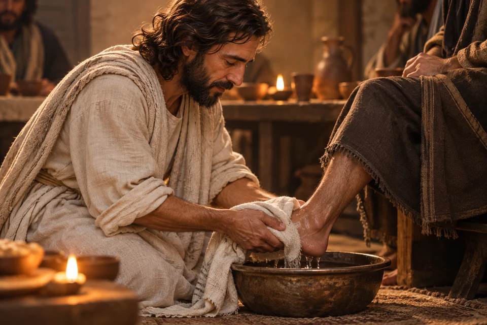
Explore the picture and scripture
Jesus kneels with a basin and towel. He asks His disciples to follow His example of service.
Try a week of remembrance: read His invitation; pray honestly; repair one wrong where safe; receive needed help; remember His Resurrection; serve quietly; prepare for the sacrament. These are invitations for reflection, not requirements for earning His love.
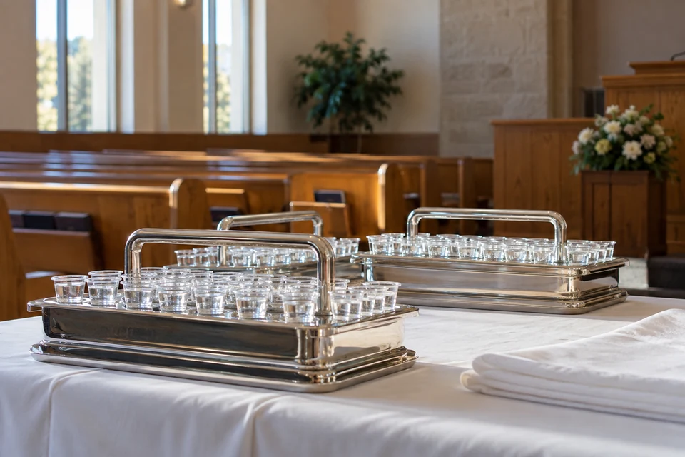
Explore the picture and scripture
Water cups wait on the sacrament table. Read the prayer that asks us to remember Jesus Christ.
The third and fourth Articles of Faith bring these invitations together: through Christ’s Atonement, faith, repentance, baptism, and the gift of the Holy Ghost belong to the way of salvation. Articles of Faith 1:3–4.
Which invitation will I carry into tomorrow? Write one small response and one question to continue studying.
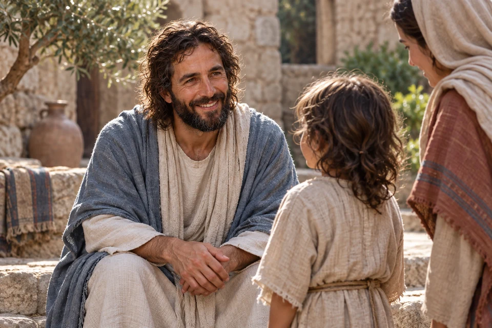
Explore the picture and scripture
Jesus welcomes a child and an accompanying adult. Read His invitation to let children come to Him.
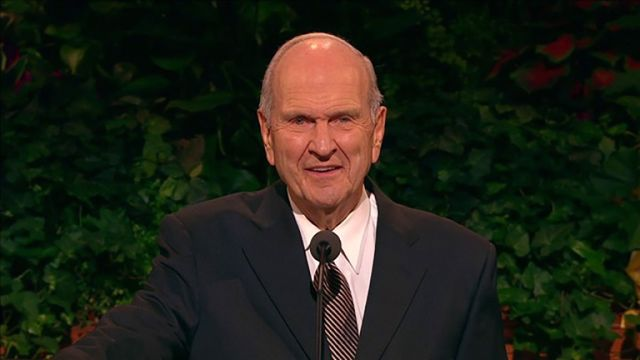
Conference message · Watch or read
Russell M. Nelson invites us to consider our relationship with God through covenants.
The Church of Jesus Christ of Latter-day Saints
Open the complete resource ↗Carry the study into your life